Датасет: NASA PCoE Battery Dataset (34 батареи)
Задача. Одной MLP-архитектурой решить три задачи регрессии по циклам заряда/разряда литий-ионных батарей: остаточный ресурс (RUL), напряжение следующего цикла, ёмкость следующего цикла. Сплит строго по батареям, оценка — MAE / RMSE / R² на тесте.
2. Постановка задачи
Регрессия предсказывает непрерывную величину по набору признаков (в отличие от классификации, где предсказывается класс). Здесь один пайплайн строит три модели:
| № | задача | цель | единица | батарей |
|---|---|---|---|---|
| A | RUL | нормированная доля остаточного ресурса RUL_frac |
доли (0–1) | 8 |
| B | напряжение | напряжение следующего цикла (voltage_mean_next) |
В | 34 |
| C | ёмкость | ёмкость следующего цикла (capacity_next) |
Ahr | 33* |
Примечание: в датасете 34 батареи, но датасет C
после честного dropna по цели и признакам содержит 33: у
B0052 всего 4 discharge-цикла, для неё не набирается строка ни с одним
полным лагом.
Задач три, потому что: (1) это покрывает формулировку «прогнозирование числовых параметров», (2) полную кривую деградации (значит, осмысленный RUL) имеют только 8 из 34 батарей, все 34 полезны для напряжения и ёмкости.
3. Данные
Источник: NASA PCoE Battery (файлы
data/raw/*.mat, B0005–B0056). Каждый файл — журнал циклов
charge / discharge / impedance: напряжение, ток, температура,
ёмкость.
Для классификации кривой деградации вводится виртуальный порог останова EOL = 0.7 · cap0 (cap0 — начальная ёмкость батареи):
| категория | кол-во | примеры | роль |
|---|---|---|---|
| полная кривая деградации | 8 | B0005, B0006, B0018, B0045–B0048, B0053 | RUL + B + C |
| censored (без EOL) | 12 | B0007, B0025–B0028, B0029–B0032, B0038 | B, C |
| аномальные (резкие/мусорные падения) | 11 | B0033, B0034, B0036, B0039, B0041, B0050–B0052, B0054–B0056 | B, C |
| короткие (быстрый EOL) | 3 | B0042–B0044 | B, C |
Для RUL остаются только 8 батарей с полной длинной кривой: censored не имеют EOL, аномальные падают почти сразу, у коротких слишком мало полезных циклов.
4. Методология
4.1. Теоретическая основа
Многослойный персептрон (MLP). Модель — сеть с прямой передачей сигнала: входной слой, скрытые слои, выходной слой. Каждый нейрон вычисляет взвешенную сумму входов и применяет функцию активации. В работе используется ReLU в скрытых слоях и линейный выход для регрессии.
Метод обратного распространения ошибки. Обучение сети состоит из двух проходов: (1) прямой проход — вычисление выхода сети; (2) обратный проход — вычисление градиента ошибки по весам через цепное правило. Градиент распространяется от выходного слоя к входному.
Функции ошибок. Для регрессии используются:
MSE
= (1/n) · Σ(yᵢ − ŷᵢ)² — средняя квадратичная ошибка (функция
потерь);
MAE = (1/n) · Σ|yᵢ − ŷᵢ| — средняя абсолютная ошибка
(метрика качества).
MSE сильнее штрафует большие ошибки, MAE —
устойчивее к выбросам. В работе MSE используется как функция потерь, MAE
— как метрика качества.
Градиентный спуск. Веса обновляются по правилу:
w(t+1) = w(t) − α · ∂E/∂w,
где α — скорость обучения, ∂E/∂w —
градиент ошибки по весу. В работе используется оптимизатор
Adam — современная реализация градиентного спуска с
моментом и адаптивным шагом.
Нормализация входов. Признаки приводятся к единому
масштабу:
xᵢ’ = (xᵢ − x̄) / σᵢ,
где x̄ — среднее, σᵢ — стандартное
отклонение. Это ускоряет обучение и стабилизирует градиентный спуск. В
работе используется StandardScaler, обученный только на train.
Регуляризация. Для борьбы с переобучением используются Dropout (случайное отключение нейронов при обучении) и EarlyStopping (остановка при отсутствии улучшения на валидации).
4.2. Признаки задач
На вход сети подаются только физические признаки цикла: статистики измерений одного цикла, их производные и лаги. Метаданные батареи (идентификатор, дата, номер строки) и длина серии нужны для группировки, сортировки и построения цели, но в признаки не входят.
| задача | число признаков | feature_cols |
|---|---|---|
| A: RUL_frac | 14 | voltage_mean, voltage_min,
voltage_max, voltage_std,
current_mean, temp_mean,
temp_min, temp_max, temp_range,
time_total, capacity,
capacity_ratio, voltage_range,
discharge_rate |
| B: Напряжение | 13 | voltage_mean, voltage_min,
voltage_max, voltage_std,
current_mean, temp_mean,
temp_max, capacity,
capacity_ratio, voltage_mean_lag1,
voltage_mean_lag2, capacity_lag1,
voltage_diff |
| C: Ёмкость | 10 | capacity, capacity_ratio,
voltage_mean, current_mean,
temp_mean, capacity_lag1,
capacity_lag2, capacity_lag3,
capacity_diff, capacity_slope |
Лаги построены сдвигом назад (shift(+1),
shift(+2), shift(+3)), то есть собираются
только по прошлым циклам. Значение следующего цикла
(voltage_mean_next, capacity_next)
используется исключительно как цель обучения — признака из будущего в
сеть не попадает.
4.3. Пайплайн
- Парсинг .mat — журнал циклов превращается в таблицу discharge-циклов (одна строка = один цикл, агрегированные статистики измерений цикла).
- Чистка — удаляются только физически невозможные значения (ёмкость вне [0, 2.6], отрицательные напряжения, импедансы вне [0, 1]); субпороговые (ниже 0.5 Ahr) ёмкости сохраняются, т.к. это реальные данные деградации.
- Признаки цикла — измерения цикла + лаги
(
voltage_mean_lag1/lag2,capacity_lag1/lag2/lag3) + производные (voltage_diff,capacity_diff,capacity_slope,discharge_rate) + нормированная ёмкостьcapacity_ratio = capacity / cap0, гдеcap0— медиана ёмкостей первых стабильных циклов (3–8) батареи. Дополнительно считается длина серии — она нужна только для нормировки цели RUL. - Цели:
- A:
RUL_cycles— остаток в циклах (длина серии минус номер цикла), цель обучения — нормированная доляRUL_frac = RUL_cycles / total_cycles(0–1); - B:
voltage_mean_next = voltage_mean.shift(-1); - C:
capacity_next = capacity.shift(-1).
- A:
- Архитектура (общий MLP-шаблон для всех задач):
входы различаются (
Input(14)/Input(13)/Input(10)), скрытая часть общая:Dense(64, relu) → Dropout(0.2) → Dense(32, relu) → Dense(1). Loss = MSE, метрика = MAE, EarlyStopping(patience=10, restore_best_weights=True), ≤ 200 эпох, Adam(1e-3), batch = 32, seed = 42. Для модели RUL: 3073 параметра; для напряжения — 3009, для ёмкости — 2817. - Препроцессинг: SimpleImputer(median) + StandardScaler, обучение только на train.
- Сплит строго по батареям: GroupShuffleSplit(test_size=0.25, random_state=42) применяется дважды → train / val / test; пересечение групп исключено.
5. Результаты
5.1. RUL_frac (8 батарей)
Тест: 240 строк, 2 батареи (B0006, B0047). Per-battery MAE_frac: B0006 = 0.094, B0047 = 0.143.
| метрика | значение | оценка |
|---|---|---|
| MAE_frac | 0.108867 | в пределах ориентира 0.05–0.15 |
| RMSE_frac | 0.129426 | близко к MAE |
| R²_frac | 0.802316 | сильная объяснённая дисперсия |
| MAE_cycles ≈ MAE_frac × средняя длина серии теста | 13.0 циклов | для интерпретации |
Средняя длина серии тестовых батарей = 119.0 (B0006 = 167, B0047 = 71). Почему цель нормирована на длину серии — в 7.1.
Что на графике. По оси X — истинное значение RUL_frac (0–1), по оси Y — предсказанное. Каждая точка — один discharge-цикл тестовой батареи. Пунктирная линия — идеальное совпадение (y = x). Вывод: точки лежат вокруг диагонали, модель объясняет форму кривой деградации.
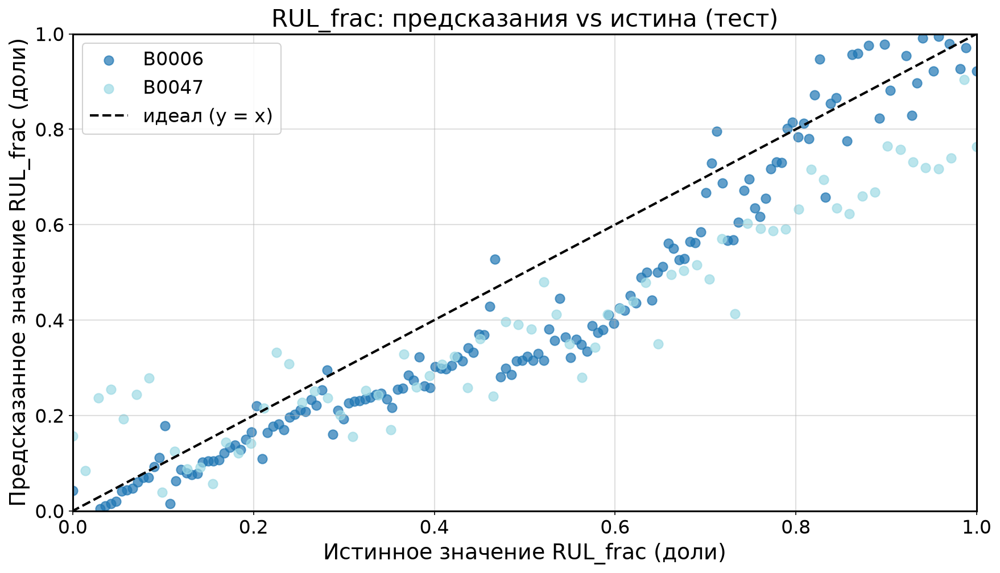
Что на графике. По оси X — истинное значение RUL_frac, по оси Y — остаток (предсказание − истина). Пунктирная линия y = 0 — идеальный случай. Вывод: остатки распределены вокруг нуля без выраженной структуры, модель адекватна.
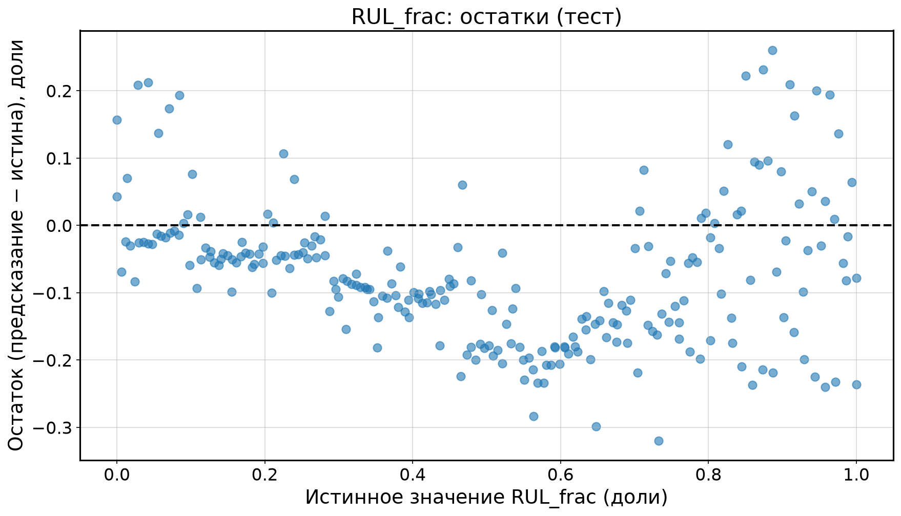
Что на графике. Одна и та же модель в двух единицах
измерения остаточного ресурса: слева — нормированная доля (0–1), справа
— та же величина, пересчитанная в циклы (RUL_frac · длина серии) против
истинного RUL_cycles. Пунктир — идеал. Вывод: в циклах
ошибка составляет около 13.0 цикла на цикл, то есть оценка в долях
читается тем же качеством, но в других единицах.
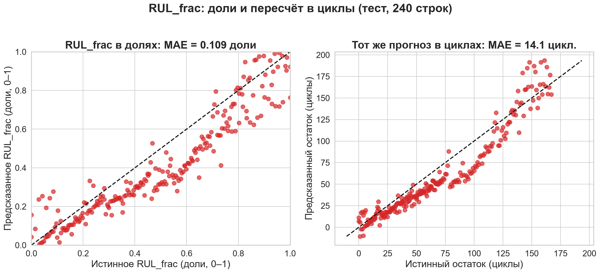
5.2. Напряжение (34 батареи)
| метрика | значение | оценка |
|---|---|---|
| MAE | 0.156747 | ошибка удерживается в пределах 0.06–0.25 В на обычных батареях |
| RMSE | 0.259169 | усиливается вкладом выбросов |
| R² | 0.048058 | низкий; на результат сильно влияет B0050 |
Тест: 696 строк, 9 батарей. Худшая батарея теста — B0050 (MAE 1.103 В против 0.06–0.25 В у остальных); без неё ошибка заметно ниже, поэтому агрегированные MAE и низкий R² не отражают качество на основной части батарей. Подробное сравнение с простыми моделями — в 5.4.
Что на графике. По оси X — истинное напряжение следующего цикла (В), по оси Y — предсказанное. Цвет — батареи теста, пунктир — идеал. Вывод: точки плотно вдоль диагонали у всех батарей, кроме B0050, которая даёт основной вклад в ошибку.
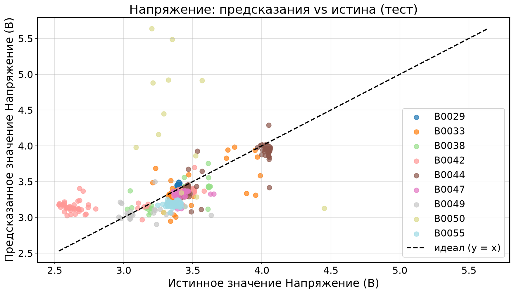
Что на графике. По оси X — истинное напряжение, по оси Y — остаток. Пунктир y = 0. Вывод: остатки вокруг нуля, отдельные выбросы — строки аномальной батареи.
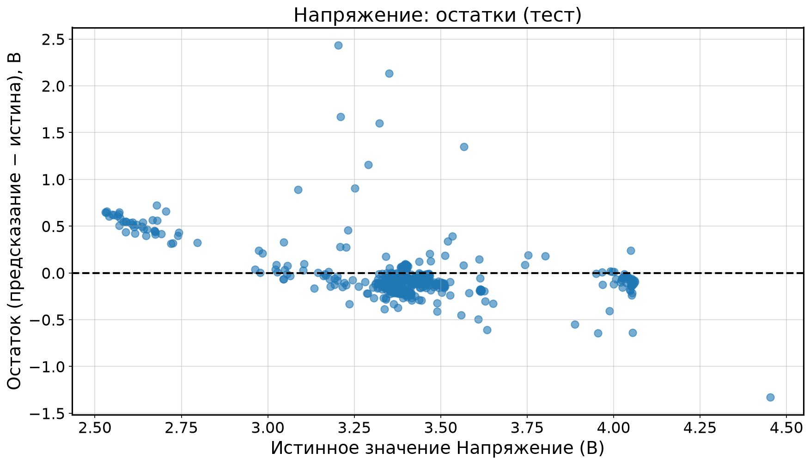
5.3. Ёмкость (33 батареи)
| метрика | значение | оценка |
|---|---|---|
| MAE | 0.138128 | устойчивое качество по всей совокупности |
| RMSE | 0.267759 | заметно выше MAE из-за выбросов |
| R² | 0.757734 | высокая объяснённая дисперсия |
Тест: 686 строк, 9 батарей. B0052 выпала из датасета после честного
dropna (всего 4 discharge-цикла, не набирается строка ни с
одним полным лагом), поэтому здесь 33 батареи, а не 34. Худшая батарея
теста — B0042 (MAE 0.373 Ahr).
Что на графике. По оси X — истинная ёмкость следующего цикла (Ahr), по оси Y — предсказанная. Цвет — батареи теста. Пунктир — идеал. Вывод: точки плотно вдоль диагонали; ёмкость даёт высокое качество, но по R² уступает RUL_frac.
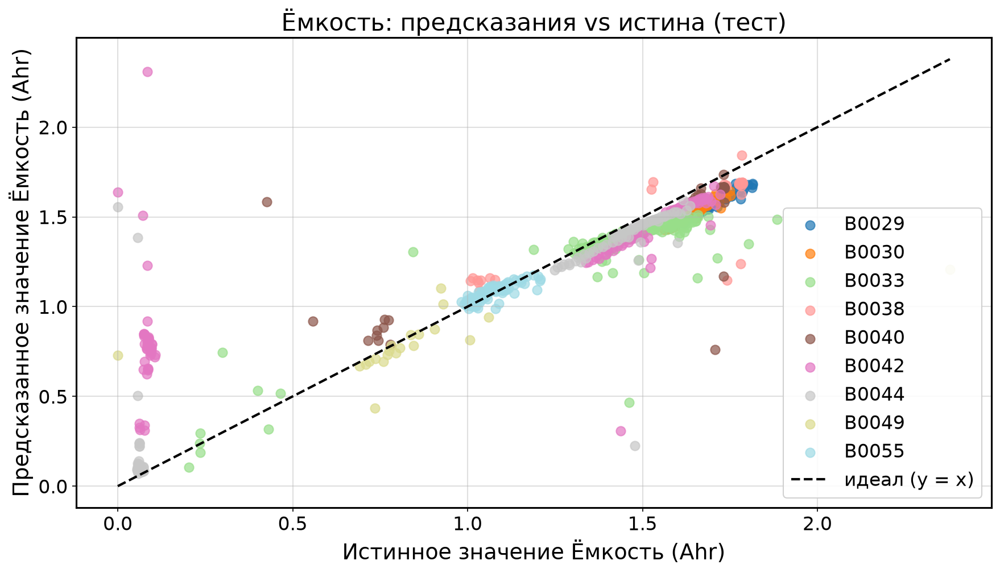
Что на графике. По оси X — истинная ёмкость, по оси Y — остаток. Пунктир y = 0. Вывод: остатки вокруг нуля, кластер около 0 — аномальные батареи.
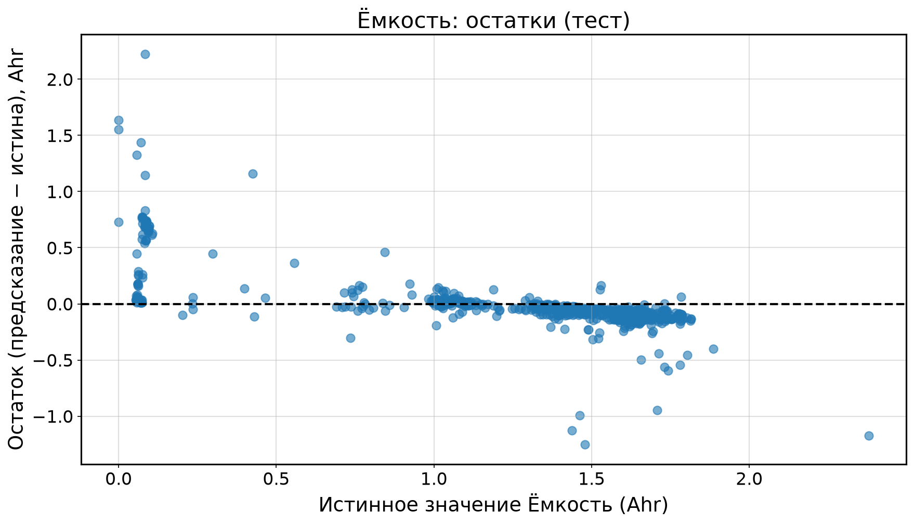
5.4. Сравнение с baseline
Что такое baseline. Baseline (базовая модель) — простое предсказание, с которым сравнивают модель, чтобы отделить вклад архитектуры от вклада самих признаков. Логика такая: если модель хуже baseline, она бесполезна, и никакая архитектура этого не оправдывает. Поэтому baseline — не формальность, а рамка честности.
Какие baseline использованы. Три простые модели на том же сплите по батареям (GroupShuffleSplit, random_state = 42) и с тем же препроцессингом:
- константа — среднее значение цели по train-строкам, предсказанное на все строки теста;
- линейная регрессия
(
sklearn.linear_model.LinearRegression) — SimpleImputer(median) + StandardScaler, оба обучены только на train, затем линейная модель; - Random Forest
(
sklearn.ensemble.RandomForestRegressor, 100 деревьев, random_state = 42) — median-imputer на train; scaler не нужен, древовидная модель инвариантна к монотонным преобразованиям.
Результаты: R² на тесте. Лучшая модель по каждой задаче выделена жирным.
| задача | MLP | константа | линейная регрессия | Random Forest | лучший |
|---|---|---|---|---|---|
| A: RUL_frac | 0.8023 | 0.0000 | -2127.86 | -0.7499 | MLP |
| B: Напряжение | 0.0481 | -0.0478 | 0.8684 | 0.5711 | линейная регрессия |
| C: Ёмкость | 0.7577 | -0.0067 | 0.8424 | 0.7025 | линейная регрессия |
Полная таблица метрик.
| задача | метод | MAE | RMSE | R² |
|---|---|---|---|---|
| A: RUL_frac | MLP | 0.1089 | 0.1294 | 0.8023 |
| A: RUL_frac | константа | 0.2521 | 0.2911 | 0.0000 |
| A: RUL_frac | линейная регрессия | 11.261 | 13.431 | -2127.86 |
| A: RUL_frac | Random Forest | 0.2800 | 0.3851 | -0.7499 |
| B: Напряжение | MLP | 0.1567 | 0.2592 | 0.0481 |
| B: Напряжение | константа | 0.1627 | 0.2719 | -0.0478 |
| B: Напряжение | линейная регрессия | 0.0388 | 0.0964 | 0.8684 |
| B: Напряжение | Random Forest | 0.0742 | 0.1740 | 0.5711 |
| C: Ёмкость | MLP | 0.1381 | 0.2678 | 0.7577 |
| C: Ёмкость | константа | 0.4182 | 0.5458 | -0.0067 |
| C: Ёмкость | линейная регрессия | 0.0975 | 0.2159 | 0.8424 |
| C: Ёмкость | Random Forest | 0.1428 | 0.2967 | 0.7025 |
Что на графике. Три панели — по одной на задачу. По оси X — четыре модели (MLP, константа, линейная регрессия, Random Forest), по оси Y — R² на тесте. Синим выделен MLP, серыми — baseline; пунктир — уровень R² = 0, то есть качество константного предсказателя. Шкала по Y общая для трёх панелей. Столбец линейной регрессии на панели A: RUL_frac уходит далеко за её нижний предел, поэтому он показан зазубренным фрагментом у края и подписан настоящим значением с пометкой «вне шкалы» — иначе на линейной оси остальные столбцы были бы неразличимы.
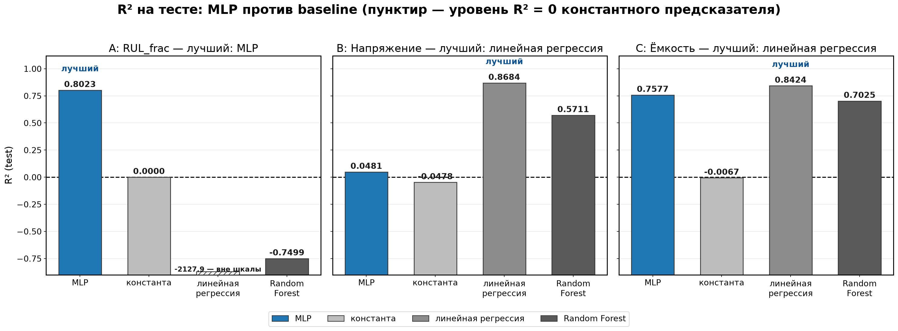
Вывод по задачам — без приукрашивания.
- A: RUL_frac — MLP побеждает. R²(MLP) = 0.8023 против 0.0000 у константы (константа по построению даёт ровно 0) и -0.7499 у Random Forest: на 8 батареях деревья переобучаются и оказываются хуже константы. Линейная регрессия здесь ломается об экстраполяцию: R² = -2127.86, MAE = 11.261 доли при целях в [0, 1]. Причина: тестовая батарея B0006 (167 циклов) длиннее любой серии в обучающей выборке (максимум 71 цикл), и линейный прогноз уходит в нефизичную область. MLP — единственная модель, удерживающая RUL_frac в осмысленном диапазоне.
- B: Напряжение — MLP проигрывает линейной регрессии. R²(MLP) = 0.0481 (MAE = 0.1567 В) против R²(LR) = 0.8684 (MAE = 0.0388 В) и R²(RF) = 0.5711. Тот же сплит, тот же препроцессинг — и простая линейная модель объясняет 87% дисперсии напряжения следующего цикла там, где MLP даёт около нуля. Это важная оговорка к разделу 5.2: низкий R² MLP здесь — не «фундаментальная нерешаемость» задачи, а свойство именно этой архитектуры на этом наборе.
- C: Ёмкость — MLP уступает линейной регрессии, но обгоняет
Random Forest. R²(MLP) = 0.7577 (MAE = 0.1381 Ahr) против
R²(LR) = 0.8424 (MAE = 0.0975 Ahr) и R²(RF) = 0.7025. Линейная регрессия
снова впереди: цель
capacity_nextсильно коррелирует с текущей ёмкостью и её лагами, и линейный предиктор выжимает из этих признаков больше, чем MLP.
Итог. MLP превосходит все три baseline
только по RUL_frac. По напряжению и ёмкости линейная
регрессия лучше, Random Forest занимает промежуточное положение, а
константа везде остаётся около нуля (R² ≈ 0 по построению). Метрики — в
data/processed/summary_baselines.json (скрипт
scripts/run_baselines.py).
6. Сравнение
| задача | единица | MAE (test) | RMSE (test) | R² (test) | строк теста | батарей теста |
|---|---|---|---|---|---|---|
| A: RUL_frac | доли | 0.108867 | 0.129426 | 0.802316 | 240 | 2 |
| B: Напряжение | В | 0.156747 | 0.259169 | 0.048058 | 696 | 9 |
| C: Ёмкость | Ahr | 0.138128 | 0.267759 | 0.757734 | 686 | 9 |
Цвет: ■ хорошо, ■ средне, ■ плохо. Легенда метрик: MAE/RMSE — в единицах цели (доли / В / Ahr), R² — безразмерен.
Что на графике. Три панели — MAE, RMSE и R²; в каждой три столбца, по одному на задачу. Под столбцами подписаны значение и единица измерения. Цвет: красный — RUL_frac, синий — напряжение, зелёный — ёмкость. Панель R² ограничена диапазоном 0–1, поэтому у напряжения (R² = 0.048) столбец почти не виден — это честная длина шкалы, а не обрезка. Вывод: MAE и RMSE у RUL_frac и ёмкости сопоставимы, а напряжение отстаёт по объяснённой дисперсии.
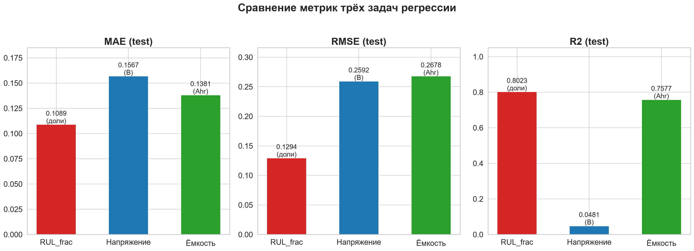
Что на графике. По оси X — эпохи, по оси Y — val MAE, нормированный к 0–1 (нормировка нужна, чтобы задачи с разными единицами цели читались на одной оси). Три кривые: красная — RUL_frac, синяя — напряжение, зелёная — ёмкость; в легенде указано число эпох, на котором EarlyStopping остановил обучение. Вывод: кривые val MAE использованы для контроля переобучения, его же числа (train / val / test) приведены в 7.1.
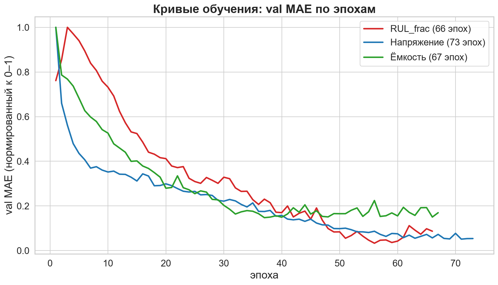
7. Анализ
7.1. RUL_frac: выбор цели и контроль переобучения
Почему цель нормирована. Остаточный ресурс в
абсолютных циклах зависит от длины серии: у длинных батарей абсолютный
RUL больше, и модель вынуждена экстраполировать к сериям длиннее
обучающих. Нормировка RUL_frac = RUL_cycles / total_cycles
приводит цели всех батарей к общему интервалу [0, 1] и убирает эту
зависимость. Полученное качество: R² = 0.802316 (MAE = 0.108867 доли, то
есть около 13.0 цикла) — и это нормированная величина, одинаково
сравнимая для батарей с разной длиной серии.
Контроль переобучения. Train MAE = 0.110101, val MAE = 0.129562, test MAE = 0.108867. Разрыв train/val ≈ 0.019461 указывает на умеренный обобщающий разрыв, а не на драматичную деградацию; ранняя остановка и Dropout ограничивают переобучение.
7.2. Feature importance (permutation)
Feature importance (без утечки). Permutation
importance для RUL_frac пересчитана по out-of-sample схеме:
SimpleImputer/StandardScaler и сама MLP
обучаются только на train-батареях (B0045, B0046,
B0048, B0053), а значимость измеряется перетасовкой признака на 2
тестовых батареях (B0006, B0047), которых модель
никогда не видела (scoring="r2", n_repeats=5,
базовый R² модели на тесте = 0.80). Топ-3 — temp_max (9.17
± 0.34), temp_mean (5.91), temp_min (1.21);
далее current_mean (0.48), capacity_ratio
(0.46), time_total (0.29), voltage_mean
(0.11), capacity (0.11), discharge_rate
(0.08), temp_range (0.06), voltage_min (0.02),
voltage_range (0.007), voltage_std (0.002),
voltage_max (−0.01).
Как это читать. Permutation importance показывает
вклад признака в точность модели на тех батареях, на которых она
проверяется. Три температурных признака дают основной вклад, вклады
остальных существенно меньше, voltage_max — около нуля
(перетасовка почти не меняет R²). Высокий вклад температурных признаков
означает, что на этом наборе модель опирается прежде всего на условия
съёмки, а не на физику деградации ёмкости, поэтому переносить такой
прогноз на батареи с другими условиями съёмки рискованно.
Что на графике. Горизонтальный bar chart: по оси X — снижение R² при перетасовке признака (mean ± std по 5 повторам), по оси Y — 14 признаков RUL. Подпись на графике фиксирует схему: fit imputer/scaler/MLP — только на train (272 строки, 4 батареи), importance — test (240 строк, 2 батареи, базовый R² = 0.80).
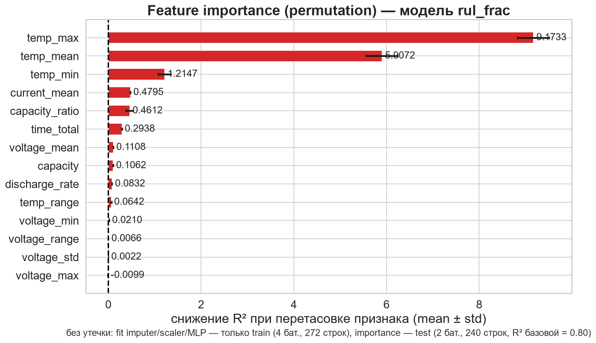
7.3. Корреляции признаков с целью
Корреляции (линейные). По модулю линейной корреляции
с RUL_frac главные предикторы — capacity_ratio
(r = 0.63) и capacity (r = 0.45). Корреляция измеряет
только линейную связь и ничего не говорит о том, использует ли признак
модель, — поэтому картина важности на рис. 7.1 (permutation) отличается
от картины корреляций здесь.
Что на графике. Тепловая карта корреляций топ-10 признаков с целью RUL_frac. Цвет: красный — положительная корреляция, синий — отрицательная. Числа в клетках — значения r.
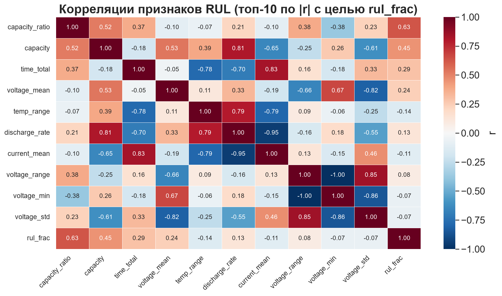
7.4. Аномалии данных
Аномалии — реальные свойства датасета, а не ошибки сбора данных.
- B0050 — мусорные/одиночные чтения напряжения в исходных файлах; строки нельзя «вылечить» признаками. В тесте напряжения она даёт MAE около 1.103 В и завышает агрегированные метрики задачи B.
- B0042–B0044 — короткие серии с немедленным падением ёмкости (EOL на ~30-м цикле); участвуют в B/C, но не дают осмысленного RUL.
- B0052 — всего 4 discharge-цикла: не набирает строк
ни с одним полным лагом и честно выпадает из датасета C после
dropna(33 батареи). - Ёмкость < 0.5 Ahr в исходных кривых — сохранена как реальные данные деградации (красные точки на рис. 7.3).
Что на графике. Кривые деградации аномальных батарей. Красные точки — циклы с capacity_ratio < 0.5. Вывод: B0033, B0034, B0036, B0039, B0041 имеют резкие падения ёмкости — реальные аномалии.
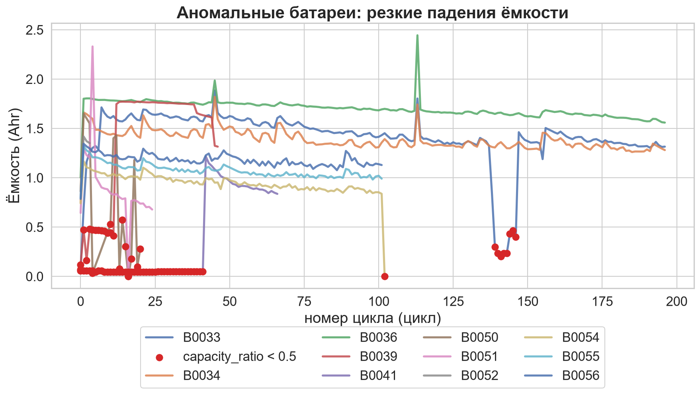
Что на графике. Три панели: RUL_frac, напряжение, ёмкость. По оси Y — батареи теста, по оси X — MAE. Вывод: для напряжения выброс — B0050 (1.103 В), для ёмкости — B0042 (0.373 Ahr), для RUL_frac — B0006 и B0047.
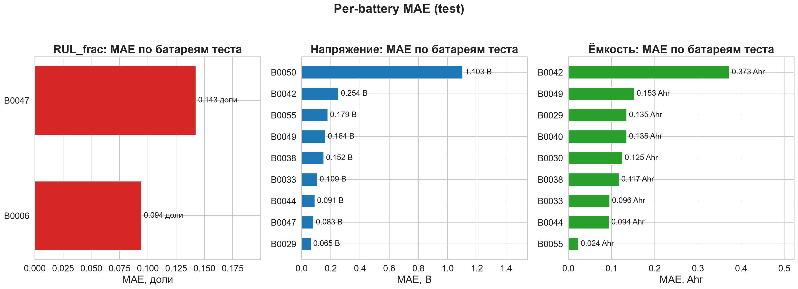
Что на графике. Кривые деградации всех 34 батарей: по оси X — номер цикла, по оси Y — ёмкость (Ahr). Вывод: видны три типа кривых — плавное убывание, резкие падения, короткие серии.
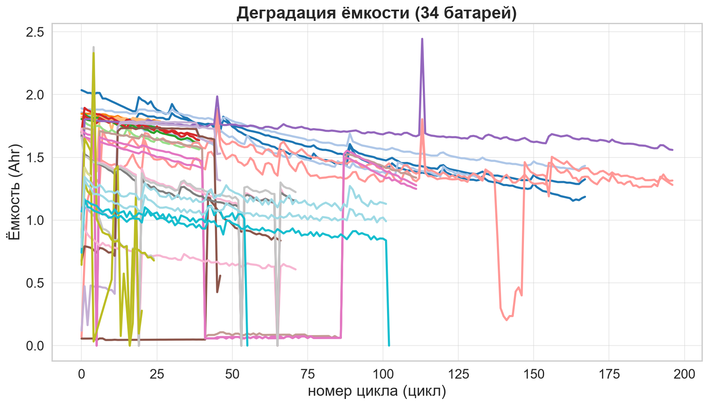
7.5. Сравнение с baseline: что из этого следует
Baseline (см. определение в 5.4) — простейшее предсказание, с которым сравнивают модель; сравнение проведено на том же сплите по батареям для константы, линейной регрессии и Random Forest. Полные числа — в таблице и на рисунке раздела 5.4, здесь разбирается смысл результата.
MLP выигрывает не всегда — и это главный вывод сравнения.
- RUL_frac: R² = 0.8023 против 0.0000 у константы. Задача нелинейная (остаточный ресурс зависит от формы кривой деградации и длины серии, а не от одного признака) и требует экстраполяции за пределы обучающих серий — здесь MLP единственная рабочая модель.
- Напряжение: R² = 0.0481 у MLP против 0.8684 у линейной регрессии. Напряжение следующего цикла почти линейно зависит от текущего напряжения и ёмкости; для такой связи универсальная сеть не нужна, а лишние параметры мешают.
- Ёмкость: R² = 0.7577 у MLP против 0.8424 у линейной регрессии. Ёмкость следующего цикла тоже почти линейно связана с текущей ёмкостью и её лагами, поэтому линейный предиктор снова точнее.
Почему так. Сложность модели должна соответствовать сложности задачи и объёму данных. Линейная регрессия на трёх задачах имеет 15 / 14 / 11 параметров (число признаков плюс сдвиг), MLP — 3073 / 3009 / 2817. При 8–34 батареях в выборке MLP переобучается, а линейная модель — нет.
Вывод. MLP не панацея: на двух задачах из трёх линейная регрессия даёт лучшее качество, и это не дефект MLP, а точная характеристика задач. Практический вывод для выбора модели: линейная регрессия — рабочий вариант для напряжения и ёмкости, MLP оправдан для RUL_frac.
8. Ограничения
- Для RUL только 8 батарей: маленькая выборка, тест — 2 батареи (25%); оценка метрик сильно зависит от того, какие батареи попали в тест.
- Длина серии известна в датасете заранее, в реальной эксплуатации она неизвестна, поэтому MAE ≈ 13.0 цикла — приближённая интерпретация нормированной метрики, а не независимая метрика.
- Censored-батареи не имеют EOL по порогу 0.7 · cap0 — их RUL не определён (свойство датасета, не пайплайна).
- Задача C обучается на 33 батареях: B0052 выпадает после честного
dropna. - Модель табличная, без физики (импеданс, температурные зависимости): признак — статистики цикла, а не полные кривые разряда.
- Аномальные батареи (B0050 и др.) остаются в датасетах B/C и ухудшают честные метрики.
- MLP переобучается на малой выборке: 8–34 батареи на 2817–3073 параметров, и на двух задачах из трёх линейная регрессия с 11–14 параметрами даёт лучшее качество (5.4, 7.5).
- Перенос прогноза на батареи с другими условиями съёмки не проверялся: всё качество измерено внутри известного набора (7.2).
9. Выводы
- Один MLP-шаблон решает все три задачи регрессии со сплитом строго по
батареям: RUL —
Input(14)и 3073 параметра, напряжение —Input(13)и 3009, ёмкость —Input(10)и 2817. - RUL_frac: MAE = 0.109, RMSE = 0.129, R² = 0.802 — нормировка цели на длину серии сняла зависимость от длины кривой; в интерпретации это около 13.0 цикла.
- Напряжение: MAE = 0.157 В, RMSE = 0.259, R² = 0.048 — низкое объяснение дисперсии; аномальная B0050 (MAE 1.103 В против 0.06–0.25 В у остальных батарей теста) остаётся главным источником агрегированной ошибки.
- Ёмкость: MAE = 0.138 Ahr, RMSE = 0.268, R² = 0.758 — высокое качество благодаря сильной связи цели с текущей ёмкостью и её лагами.
- Все 34 батареи задействованы (RUL — 8 с полной кривой, напряжение — 34, ёмкость — 33 после честного dropna); ограничения датасета задокументированы, а не скрыты.
- Важность признаков: permutation importance
посчитана вне обучающей выборки (fit на train, перетасовка на тесте,
scoring="r2",n_repeats=5): топ-3 —temp_max(9.17),temp_mean(5.91),temp_min(1.21), то есть прогноз опирается прежде всего на условия съёмки, а не на физику деградации. - Сравнение с baseline: MLP превосходит все baseline только по RUL_frac (R² = 0.8023 против 0.0000 у константы). По напряжению и ёмкости лучше линейная регрессия: R² = 0.8684 и 0.8424 против 0.0481 и 0.7577 у MLP; Random Forest занимает промежуточное положение. Это говорит о почти линейной природе задач напряжения и ёмкости и о переобучении MLP на малой выборке (см. 5.4, 7.5).
10. Приложение
Схема пайплайна и архитектуры.
Что на схеме. Пайплайн обработки: .mat → parser → clean → features → 3 датасета → 3 модели → метрики → отчёт.
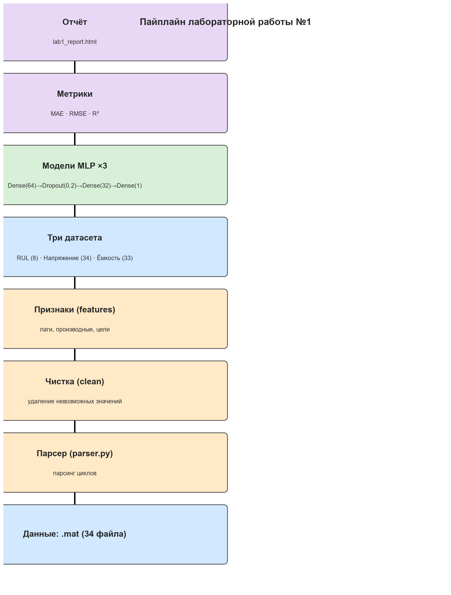
Что на схеме. Архитектура MLP для RUL: Input(14) → Dense(64, ReLU) → Dropout(0.2) → Dense(32, ReLU) → Dense(1). Всего 3073 параметра.
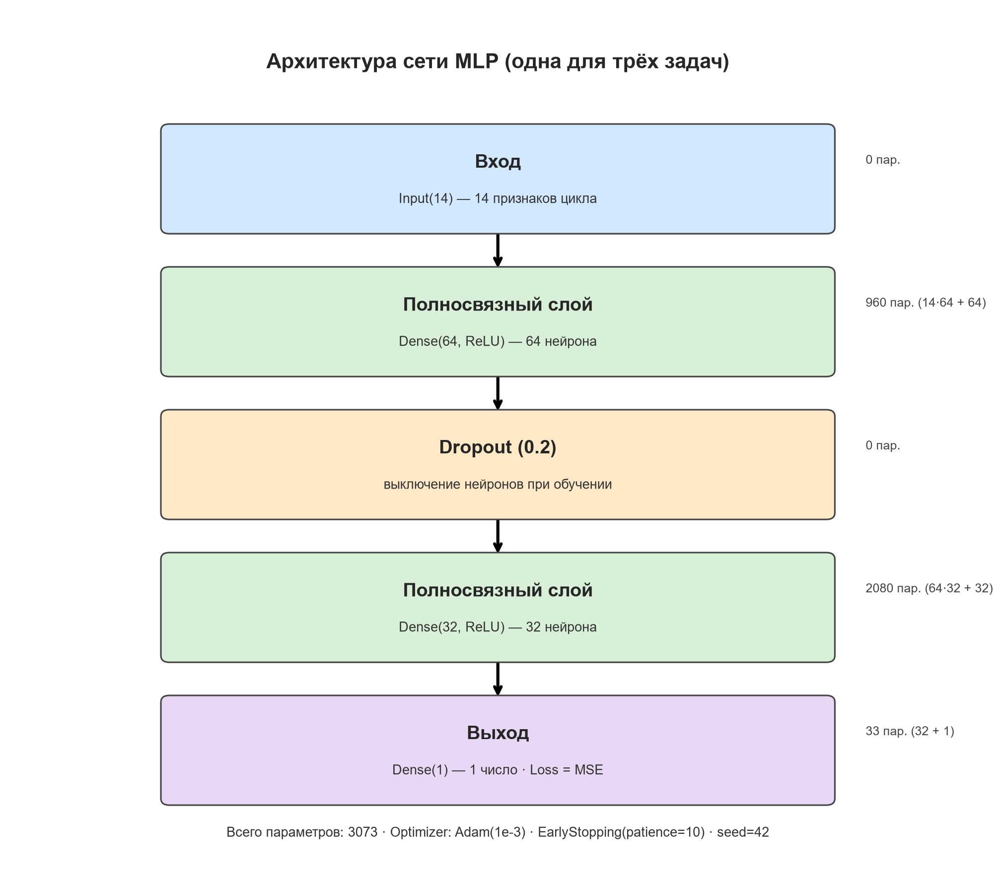
Что на графике. Итоговая сводка: метрики трёх задач, предсказания RUL_frac, деградация ёмкости, кривые обучения.
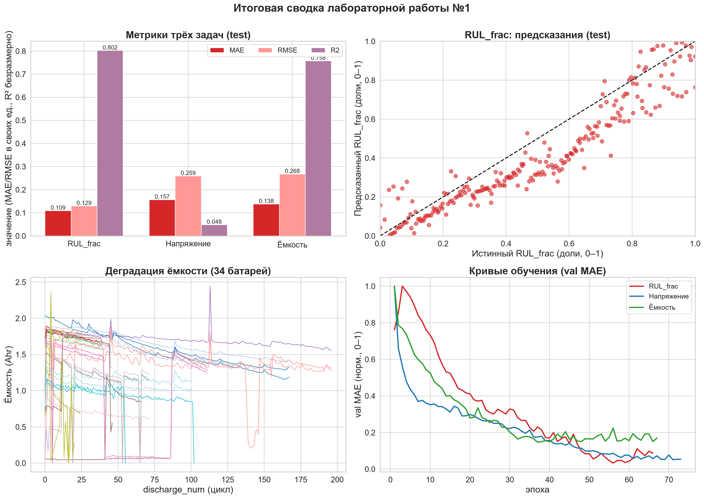
Выходные файлы пайплайна.
| файл | содержание |
|---|---|
metrics_rul.json |
метрики RUL_frac (train/val/test, per-battery, split) |
metrics_voltage.json /
metrics_capacity.json |
метрики задач B/C |
summary_metrics.json |
сводка метрик трёх задач |
summary_baselines.json |
метрики MLP, константы, линейной регрессии и Random Forest по трём задачам |
comparison_baselines.json |
те же метрики в плоском виде (задача × модель) |
battery_rul.parquet /
battery_voltage.parquet /
battery_capacity.parquet |
датасеты задач |
model_rul.keras / model_voltage.keras /
model_capacity.keras |
обученные модели |
battery_features.parquet/csv/xlsx/json |
таблица признаков 34 батарей |
../reports/figures/baseline_comparison.png |
R² (test): MLP против baseline по трём задачам |
Воспроизводимость.
python scripts/run_all.py пересобирает весь пайплайн
(парсинг → признаки → обучение → таблицы метрик → графики → HTML-отчёт)
с фиксированными семенами; python -m pytest tests -q — 24
теста; python scripts/check_leakage.py — проверка утечек
(состав признаков против чёрного списка колонок, знаки лагов,
пересечения сплита, обучение нормализатора только на train);
python scripts/run_baselines.py — метрики baseline;
python scripts/run_baseline_chart.py — пересборка графика
baseline_comparison.png по сохранённым метрикам без
повторного обучения.
11. Использованные методы
| Метод | Где использовано |
|---|---|
| Обучение с учителем | Все три задачи |
| MLP с прямой передачей сигнала | Dense(64) → Dropout(0.2) → Dense(32) → Dense(1) |
| Функция потерь MSE | Loss модели |
| Метрика MAE | Оценка качества на val/test |
| Обратное распространение ошибки | Обучение в Keras (model.fit) |
| Градиентный спуск (Adam) | optimizer="adam", скорость обучения 1e-3 |
| Нормализация входов | StandardScaler, обучение только на train |
| Dropout | Слой Dropout(0.2) |
| Ранняя остановка | EarlyStopping(patience=10, restore_best_weights=True) |
| Permutation importance | Оценка важности признаков RUL_frac |
| Baseline: константа (среднее по train) | Сравнение с MLP в 5.4 |
| Baseline: линейная регрессия | Сравнение с MLP в 5.4 |
| Baseline: Random Forest | Сравнение с MLP в 5.4 |
| Сравнение с baseline | Разделы 5.4 и 7.5 |
Итог сравнения с baseline. Линейная регрессия оказалась лучше MLP для задач напряжения и ёмкости: R² = 0.8684 и 0.8424 против 0.0481 и 0.7577 у MLP. Это указывает на почти линейную природу этих задач; MLP оправдан только для RUL_frac. Подробный разбор — в 5.4 и 7.5.